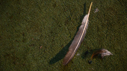

Pause
Unmute
ENGLISH
SPANISH
ABOUT
BLOG
FILTER STORIES
Search
Categories
Sea
Land
Archive
Tags
2009
Cockfighting
Coffee
Diving
Floreana
Galapagos
Health Care
Immigration
Isabela
Kicker Rock
Leon Dormido
National Park
People
San Cristobal
San Cristóbal
Santa Cruz
agriculture
children
cruise ships
ecology
environment
faith
family
fishing
invasive species
love
moving
photojournalism
prostitution
restaurant
sea lions
sex worker
surfing
tortoise
turtle
You are now viewing blank of blank media items.
VIEW:
GRID
|
MAP
The Captain
The need to support his family led one man to turn to the tourism industry.
Face to Face
Exploring the complex relationship between sea lions and humans on San Cristóbal, Galápagos
Turning to Tourism
One man's need to serve his family leads to an adventurous career underwater.
Part of a whole
Producing the world's favorite crop in the capital of paradise

Blood and Feathers
Francisco Paredes raises and trains roosters to fight on San Cristóbal
Carmen and Pedro
A love story of a 90-year-old Galapagos farm couple.
Forbidden Refuge
A mother fights to give her five sons a better life.
On the Path of Light
Surfers of the Galápagos are isolated from the wider culture of professional surfing.
Not At Home
Iris moved her family from New York to the Galapagos Islands. Now, she has to make it work.
The Girl in Heels
Selling happiness for money: the trade-off of a Commercial Sex Worker
Sharks Attacked
Sharks in the Galápagos Islands are threatened by illegal fishing.
2009: The Local Way
Looking beneath the surface on the island of Santa Cruz
2009: Connected to the Sea
Local fisherman faces challenges to make a living.
2009: Surfing Generations
Galápagos surfers discuss their heritage
2009: The Lonesome One
There is much that tourists can't see in the life of an iconic turtle
2009: Evolving Faith
A Catholic priest serves in Darwin's laboratory.
2009: A Healing Hand
A gynecologist provides health care for all the people of Isabela Island.
2009: Changing the Guard
Galápagos National Park guards protect the islands' myriad species
2009: A Life in Art
Nature serves as an inspiration for a Galápagos artist
2009: Hanging on to Boyhood
A look at youth culture at the far reaches of the Galápagos
2009: Farming the Future
As times change, a family embraces tourism
2009: Human Tide
Culture clashes with nature on the island of Santa Cruz
2009: Return to the Wild
o Bringing tortoises back to the Galápagos
2009: Offshore
A fight to keep local funds at home
2009: A New Path
Helping locals and tourists identify with nature
2009: Nature's Keeper
A native Galapagoian finds his calling as a preservationist
2009: Highland Origins
A local teacher discusses the past and present of his hometown